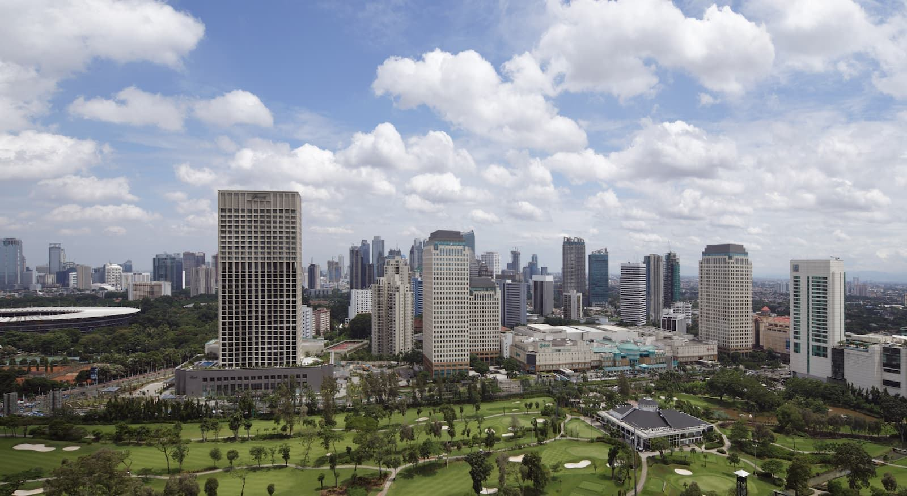

v5, from the final design: homepage v31, animated v14 (the website in the Final package). Every example on this page uses the website's own CSS (site.css), the tokens (tokens.css) and the standardised components (components.css), so it renders exactly as on the site.
New in v5: buttons are square again; the logo's rounded top-right corner is for cards and pictures only. New in v4: secondary buttons are red (red outline on light backgrounds; white with a red label on photos); cards and pictures take the logo's rounded top-right corner; box buttons share one line arrow (bigger head, shorter shaft, 1.5 stroke); the ring arrow is shorter and as thin as the ring; the CTA no longer overlaps the section above. New in v3: the service button now carries a line diagonal arrow (↗) inside its ring instead of a filled play triangle; every arrow in the system is drawn with lines, never filled. The homepage hero is taller so the skyline photo runs to the ground under a bottom gradient, with no scroll parallax. New in v2: the service button (ring + arrow) in three sizes and the button hierarchy, illustrated counter, Kajima mark as map hotspot, Core Strengths line icons, Projects by building type, the Careers section with job cards, and hover micro-animations. Items marked V2 are new or changed.
A light, restrained palette: white space and hairlines carry the layout, Ink carries the text, and Kajima Red is kept for the main action and small accents, never large fills. Photography (sky, skyline, people on site) brings the warmth.
Brand: primary & accent
Kajima Red is the primary colour (main buttons, active lines, service-button rings, map highlights). Red Deep is its hover and the only red allowed for small text.
Secondary & neutrals
Ink is the secondary colour: text, dark buttons, active tabs and chips. Slate is for secondary text; Stone is only for inactive markers and icons.
Photo accents
Only used as overlays and fallbacks behind photography, never for UI.
Status (new)
For form validation, notices and toasts. Error shares the Red Deep hue, so an error is always shown with an icon and a message, never by colour alone.
Contrast
Calculated live from the token values (WCAG 2.2). AA needs 4.5:1 for body text and 3:1 for large text (24px+, or 19px+ bold).
Text
Background
Sample
Ratio
Result
Use
Foundations · 02
Typography
One family, Inter Tight. Headings are large and Light (300) with tight tracking, so they read calm and precise. Body is Regular (400) at 17px, labels are small uppercase Medium (500) with wide tracking.
Providing world-class services, we are a leading international contractor and developer.
Body17px (16px mobile) · 400 · 1.6 · max ±70 characters per line
45 in-house architects and engineers at Kajima Design Asia coordinate architectural, structural, civil, mechanical and electrical design.
Body S15px · 400–500 · 1.55 Buttons, links, footer
Sentral Senayan I, 4th Floor · Jl. Asia Afrika No. 8, Jakarta 10270
Small / caption14px · 13px
Projects completed in Indonesia
Eyebrow12px · 500 · uppercase · +0.16em
Global Network
Tag11px · 500 · uppercase · +0.14em · Red Deep
Industrial
Stat48px · 300 · 1 · −0.03em
210+Projects completed in Indonesia
Rules
Headings have no full stop, use text-wrap: balance, and stay within 2–3 lines; a long heading spans the full width with its text underneath. Section intro paragraphs stay within 2 lines. Short copy on photos stays within 3 lines. No serif and no second family.
Foundations · 03
Spacing & grid
An 8-point scale with 4-point half steps. Generous section spacing (128px) is part of the clean look; inside components the steps are smaller.
Spacing scale
Token · value · bar
Layout values
Container
1280px max (incl. side padding)
Side padding
48px desktop · 32px tablet · 20px mobile
Columns
12, gutter 32px (cards 24–32px)
Section padding
128px desktop · 88px mobile
Section head → content
64px (40px mobile)
Breakpoints
> 1080 desktop · 721–1080 tablet · ≤ 720 mobile
12-column grid
Section head: heading on columns 1–6, intro text on 7–12. Text + photo blocks split 6 / 6 or 5 / 7.
Layout ratios
Photo ratios used across the site.
16:9 · service card
4:3 · project card
4:5 · pinned works
2:1 · globe
2:1 · careers band
17:10 · CTA
Foundations · 04
Radius, shadow, opacity
Sharp corners and hairlines give the precise, engineered feel. Shadows are soft and appear only when something lifts (hover, menu, modal); resting cards use a 1px line.
Line icons on a 24px grid, 1.5px stroke, round caps, drawn in currentColor. Icons support a label; they never replace one. Projects and people are always shown with photography, and process steps with numbers.
Core Strengths icons V2
44px line icons drawn in Kajima Red (1.5px stroke, round caps), one per strength. They follow the existing site's 2×2 icon grid. Hover each one: every icon has its own one-shot micro-animation (badge sways and the check redraws · the chip core turns and the pins redraw · the clock hand sweeps · the coins hop).
Quality
Technology
Delivery
Cost
Illustrations & map hotspot V2
The character pieces kept from kajima.co.id, recoloured to the brand tokens: three counter illustrations (Fuji + rising sun, Monas, skyline with the K) and the Kajima mark used as the hotspot on the globe (white disc, red ring when active). Illustrations always sit above a number, never alone.
Founded in Tokyo
In Indonesia
Projects
Map hotspot
Foundations · 06
Motion
From Step 6 v4. Calm and functional: things settle into place, never bounce around. Only transform, opacity and clip-path are animated, every entrance runs once, and everything switches off for "reduce motion".
Easing & duration
Select "Play" to compare the curves (900ms).
--m-outcubic-bezier(.2,.8,.2,1) entrances, reveals, headline words
--m-stdcubic-bezier(.4,0,.2,1) hover, state changes
Smooth scrolling; hero and CTA "cover" effects, timeline line
Counters
1.5–1.8s, ease-out cubic
Every number counts up from 0, years included
Hover micro-animations V2
One-shot keyframes that end where they start, so leaving early never snaps. All of them sit inside @media (prefers-reduced-motion: no-preference).
Element
On hover
Timing
Service button (all sizes)
The two arcs close into a full ring and turn half a circle; the diagonal arrow nudges up-right; the label underlines. Inside a card, hovering the card triggers it.
700ms dashoffset · 900ms turn · --ease
Box buttons
Primary darkens; secondary (Line, Light) fills red with a white label; the line arrow nudges 4px. No ring.
250ms
Counter cell
Illustration floats up 8px, the line widens, the red dot pops.
900ms · 600ms dot
Core Strengths icons
Quality: badge sways, check redraws · Technology: core turns 90°, pins redraw · Delivery: hand sweeps 360°, speed lines rush · Cost: coins hop one after another (70ms stagger).
600–1000ms
Cards (service, job)
Lift 4px, border turns Ink, soft shadow (sh-2).
400ms
Globe hotspots (Step 6)
Each Kajima mark fades and grows in when its arc lands; on hover it eases to the larger size with the red ring, pulse and label fading in. The globe draws at full frame rate only while a mark is easing.
τ 150ms appear · τ 80ms hover
Components · 01
Atoms
The smallest pieces. They are combined into everything else.
EstablishedPT WASKITA KAJIMA CORPORATION INDONESIA
Established in 1975
Core Strengths grid V2
Replaces the process steps under the service cards. Intro on the left; on the right the existing site's 2×2 grid: line icon, title and the two points from kajima.co.id, all text always visible (no hover-to-reveal). Hover a cell for its icon animation.
Core Strengths
Strength of our design‑build
Quality
Single source responsibility
Integrated design-build quality control by ISO 9001
Technology
Feedback from construction technology
Comprehensive supporting technology
Delivery
Fast-track commencement
Short construction period, flexibility for changes
Cost
Reliable cost projection
Optimal method and value engineering for low costs
Accordion item
Closed rows show the key fact (placement); the + turns into − when open.
Project ManagerSite Project
Responsibilities
Overseeing all aspects of projects, from planning and budgeting to execution and completion.
Managing project timelines, resources and budgets to achieve set objectives.
Qualifications
Bachelor's degree in civil engineering.
Having min. 10 years or more experience on Construction Project across Industrial, Commercial or Residential Sectors.
Complete parts of the interface, shown as they appear on the site.
Header: over a photo, and solid (sticky) with a dropdown open
Transparent with white logo over the hero; turns solid white (92% + blur) after 60px of scroll. "Discuss a Project" appears only after the hero. Menu centred, underline grows in Kajima Red.
Full-width heading (max 2 lines, no intro), building-type tabs on the left, one featured project on the right with the small service button and "Also" links, and a red box button "View all projects" under the tabs. Select a tab to switch.
Our Projects
From factories to hotels, 210+ projects in Indonesia
One layout for every inner page: full-bleed photo, breadcrumb + H1 bottom-left, one line of intro bottom-right, then the sub-navigation.

History & Principal Projects
Kajima in Indonesia since 1959, and Kajima Corporation since 1840.
Counter + client logos V2
Each number sits under its illustration with the line–dot–line divider. All numbers in Ink. Hover a cell.
1840Kajima Group, founded in Tokyo
1975In Indonesia since
210+Projects completed in Indonesia
Trusted by leading manufacturers and developers
Careers V2
Section head like every other section (heading, then the intro under it). Below: a contained photo (never a full-width background) beside four job cards in a 2×2 grid; "View positions" and the CV email sit under the cards.
Careers
We are hiring
We develop engineers who build with care, guided by Japanese standards in safety, quality and craft.
Sunset sky, centred heading + one red button, Jakarta skyline cut cleanly at the bottom; then the footer. The CTA and footer scroll normally with smooth scrolling; no overlap or shadow over the section above (v4). The skyline sits right under the button.
Together, we build a better Indonesia
Tell us about your next factory, office or facility. Our team will get back to you.
Opens from every "Discuss a Project" button: two-column form, inline validation, consent, success state.
Project enquiry
Discuss a project
Share a few details and our team will contact you within two working days.
Please add the project location.
Components · 04
Interactive
Every control has a 44px touch target, a visible keyboard focus (2px Kajima Red, offset 3px) and a disabled state.
Buttons: variants × states
Two families. Box buttons (Primary, Line, Dark, Light) carry one line arrow, the same size in every variant, and never a ring. Buttons have square corners; secondary buttons (Line, Light) are red: one red Primary per section, Line for the secondary action, Light on photos, Dark inside neutral content. Service buttons (ring + arrow) are for text links and buttons inside cards, in three sizes. "↗" opens an external site.
Variant
Default
Hover
Focus
Disabled
Loading
Primary
Send
Send
Send
Send
Send
Line
View Projects
View Projects red fill
View Projects
View Projects
View
Dark
Apply now
Apply now
Apply now
Apply now
Apply
Light
View Positions
View Positions
View Positions
View Positions
View
Service · large V2
Explore
Explore ring closes, turns
Explore
Explore
—
Service · small V2
View project
View project
View project
View project
—
Service · card V2
View position
View position
View position
View position
—
Text link
Explore Design →
Explore Design →
Explore Design →
Explore Design →
—
Checkbox (new)
Radio (new)
Switch (new)
For settings that apply immediately. Use a checkbox inside forms.
 In Indonesia
In Indonesia